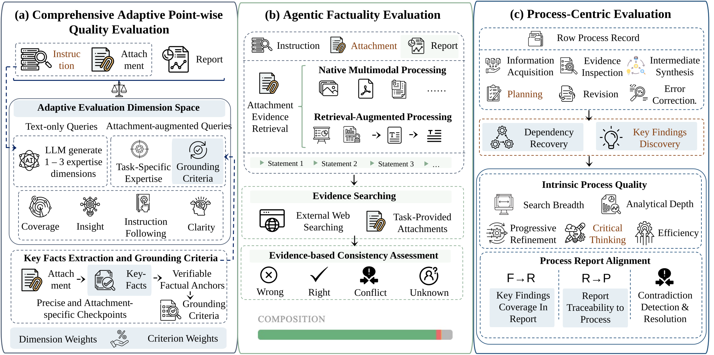

- Intro MiroEval
- Benchmark Construction
- User-Derived Query Curation
- Automated Query Generation
- Verification
- Evaluation Pipeline
- Findings
- The Complex Landscape of Factuality
- The Decoupling of Process Quality and Report Quality
- What Truly Differentiates Strong Models from Weak Ones?
- Text-Only Performance & Multimodal Performance
- Performance
Intro MiroEval
Recent progress in deep research systems has been impressive, but evaluation still lags behind real user needs. Many existing benchmarks rely on synthetic tasks, focus mainly on final outputs, and provide limited coverage of multimodal settings, making it hard to measure whether a system can truly conduct research rather than simply write a plausible answer.
To address this gap, we introduce MiroEval, a framework for evaluating deep research systems, consisting of both a benchmark and an evaluation suite. Grounded in real user needs, MiroEval does not rely on manually crafted tasks alone. Instead, we study large-scale patterns in how people express research needs, identify recurring task structures, and use these patterns to automatically construct benchmark queries and evaluation instances at scale. Beyond final outcomes, MiroEval places particular emphasis on process evaluation, measuring not only the quality of final reports but also how effectively a system searches, reasons, refines its investigation, and supports its conclusions throughout the research process. The overall results show that while current systems can often produce strong-looking reports, substantial gaps remain, especially in multimodal tasks and process-level performance.
Concretely, our process evaluation covers both intrinsic process quality and alignment between the research process and the final report.
Benchmark Construction

The MiroEval benchmark construction pipeline: (a) User-Derived Query Curation, (b) Automated Query Generation, and (c) Benchmark Assembly and Verification.
A reliable benchmark for deep research systems requires queries that are authentic, diverse, and temporally relevant. We achieve these properties by grounding query construction in real user needs and live web signals. MiroEval contains 100 queries — 70 text-only and 30 multimodal — constructed through two complementary paths:
- User-derived curation (65 queries) — Real user interactions transformed through privacy-preserving rewrites and difficulty stratification.
- Automated generation (35 queries) — Text-only queries grounded in real-time web trends, refreshable on demand.

Query Distribution Overview — domain × task taxonomy, domain distribution, and task distribution.
User-Derived Query Curation
We source queries from real interactions with MiroMind, spanning text-only and multimodal inputs (images, PDFs, spreadsheets, slides), then apply a three-stage pipeline:
- Privacy filtering — Exclude sensitive content and replace named entities with realistic substitutes to prevent source identification.
- Feature-driven classification — Tag each query with evaluation features from a taxonomy of 8 capabilities (e.g., planning, search, factuality, multimodal understanding) to guide balanced sampling.
- Difficulty-stratified rewriting — Route queries into Easy (basic retrieval), Medium (multi-step reasoning), or Hard (contradiction / erroneous-premise detection) tiers through 6 rewriting strategies, balanced by feature coverage and strategy diversity.
The resulting 65 queries (35 text-only, 30 multimodal) cover all 8 evaluation features across three difficulty levels.
Automated Query Generation
We generate text-only queries across 12 topics × 3 subtopics. For each topic, we retrieve recent headlines via the Serper API and use an LLM to generate candidate queries with domain-specific personas. This produces 180 candidates, which then pass through three filters:
- Search validation — Require ≥ 3 web results from ≥ 2 distinct domains. → 152 retained (84.4%)
- Deep-research necessity — An LLM confirms the query genuinely demands external sources. → 96 retained (63.2%)
- Inverse quality assessment — The most critical filter. A separate LLM answers the query without search access; we keep only queries where this baseline answer is inadequate. → 35 retained (19.4% cumulative)
Verification
Three annotators with graduate-level research experience assess all 100 queries on validity (legitimate deep-research task?) and non-triviality (requires web search?), achieving high inter-annotator agreement with 92.0% overall precision.
Since the auto-generated path is fully automated, it can be re-executed at any time to incorporate the latest web trends — keeping the benchmark fresh as the world moves on.
Query Showcase
Below are representative examples from the final benchmark, illustrating the depth, complexity, and multimodal nature of the curated queries.
I'm curating an exhibition called 'The Genealogy of the Frame' that traces the evolution from Renaissance painting to video game interfaces. My research shows a clear progression: Alberti's Window (1435) established the painting as a static window into illusionary space, then the Cinematic Screen (1895) became a window into recorded time, and finally the Ludic Interface (1970s–Present) transformed the screen into a control panel. I'm particularly interested in how Jacques Derrida's concept of the Parergon directly influenced early video game HUD design in the 1980s, since he wrote extensively about digital interfaces before his death in 2004. Can you help me find specific artworks and game examples that illustrate this theoretical lineage, create a detailed timeline, and suggest ways to connect these developments through Derrida's framework of digital aesthetics?
I'm preparing for an upcoming neuroscience seminar where I need to present this Nature Neuroscience paper on axon initial segment plasticity during fear learning. The attached paper shows some interesting findings about AIS dynamics in mouse prefrontal cortex, but I want to put their results in proper context before my presentation. Could you help me compare their key experimental findings with what's currently known in the field about AIS plasticity and fear memory? I'm particularly interested in how their longitudinal imaging approach and the specific AIS length changes they observed stack up against other recent studies on structural plasticity during learning. Also, I'd appreciate if you could identify any methodological limitations or alternative interpretations of their data that I should be prepared to discuss during the Q&A session.
Evaluation Pipeline

The MiroEval evaluation pipeline: (a) Comprehensive Adaptive Point-wise Quality Evaluation, (b) Agentic Factuality Evaluation, and Process-Centric Evaluation.
To provide a holistic assessment of deep research capabilities, we design a multi-dimensional evaluation pipeline that moves beyond static metrics. Our framework evaluates not only the quality and factuality of the final report but also the reasoning process. The pipeline consists of three specialized components:
Comprehensive Adaptive Point-wise Quality Evaluation
Deep research tasks differ widely in domain and inputs, so fixed evaluation criteria are insufficient. To solve this issue, we propose an adaptive framework that dynamically generates evaluation dimensions and criteria for each query. It combines universal quality aspects—such as coverage, insight, instruction-following, and clarity—with task-specific expertise derived from the query. For queries with attachments (e.g., PDFs or figures), it additionally evaluates grounding, checking whether the report correctly interprets and uses the provided materials based on key facts. The final report quality is then assessed by an LLM judge using these adaptive criteria.
Agentic Factuality Evaluation
To verify that claims in generated research reports are supported by reliable evidence, we introduce an agentic factuality evaluation framework that retrieves and reasons over evidence from multiple sources. Given a report, the system first decomposes it into verifiable statements and then collects evidence from both external web search and task-provided attachments. The evaluation agent then compares each statement with the gathered evidence and assigns a factuality label—RIGHT, WRONG, CONFLICT, or UNKNOWN—allowing the benchmark to capture both correctness and disagreements between different evidence sources.
Process-Centric Evaluation
Beyond evaluating the final report, we assess how a system conducts the research process itself. The framework first converts raw process logs into a structured sequence of atomic research steps (e.g., information retrieval, evidence inspection, synthesis, planning, and revision) to enable static analysis. It then evaluates the intrinsic quality of the process along dimensions such as progressiveness, redundancy, recovery, coverage, and coherence. Finally, the framework examines the alignment between process findings and report findings, checking whether conclusions in the report are supported by the research.
Findings
Across the three evaluation pillars — report quality, factuality, and process quality — the participating deep research systems show a clear tiered separation. The MiroThinker family delivers the strongest overall performance, claiming 3 of the top 5 spots (ranks 2, 3, and 5) in Text-Only report quality, the top 2 in Multimodal report quality, and ranking 2nd in both factuality and process quality. ChatGPT also demonstrates well-rounded performance. Gemini, Claude, and Kimi each excel in one or two dimensions but show notable weaknesses elsewhere. Qwen, Grok, Doubao, Manus, and Deepseek fall below average on most metrics.
The Complex Landscape of Factuality
Kimi, ranked 1st in report quality, drops to 13th in factuality, exposing a core tension in today's deep research systems: a well-written report is not necessarily a truthful one. Models may boost perceived quality through bolder inferences and freer synthesis, but at the cost of factual precision. Verbosity plays a key role in this tradeoff — the most verbose model (Kimi, over 60k atomic statements) ranks near the bottom in accuracy, and the second most verbose (Doubao, over 40k) fares similarly. MiroThinker, by contrast, generates less than a third of Kimi's statement volume while keeping its error count to roughly a quarter of Doubao's, striking a better balance between information density and accuracy. It is information density, not information volume, that drives factually reliable reports. A closer look at error types reveals that different models fail in fundamentally different ways: Doubao tends to fabricate outright incorrect facts (highest WRONG count), Kimi's dominant failure mode is generating unverifiable, vague claims (higher UNKNOWN proportion), and Gemini produces a significant number of self-contradictory statements within the same report (highest CONFLICT count). These three error types — fabrications, vagueness, and contradiction — point to distinct underlying capability gaps and suggest different improvement directions for each system.

Verbosity vs. Factual Accuracy — more verbose models tend to sacrifice factual correctness.
The Decoupling of Process Quality and Report Quality
Kimi ranks only 8th in process quality yet 1st in report quality — a 7-position gap — indicating that strong writing ability can “polish” a weak research process. The reverse, however, does not hold: no model with a strong process produces a poor report, suggesting that a solid research process is a reliable foundation for a good report. MiroThinker_v17 ranks 2nd in both report quality and process quality, meaning its report quality stems from a rigorous research process rather than surface-level writing skill. Furthermore, the process–report alignment metrics reveal a directional asymmetry: across all models, F→R scores (whether process findings are reflected in the report) are significantly higher than R→P scores (whether report claims can be traced back to process evidence), with the gap exceeding 2 points for most models. This means models rarely omit what they have found, but routinely introduce conclusions in their reports that lack adequate evidential support from the research process — a likely source of hallucination during the report generation stage, and a process-level explanation for the factuality issues discussed above.

F→R vs. R→P — the directional asymmetry in process-report alignment across Text-Only and Multimodal settings.
What Truly Differentiates Strong Models from Weak Ones?
Analyzing the score distributions across sub-dimensions, we find that models converge on “surface-level” capabilities but diverge sharply on “deeper” ones. In report quality, the gap between the highest and lowest scores on instruction following is only about 1.7 points, while the gap on insight reaches 2.5 points — nearly 1.5 times larger. The same pattern holds for process quality: the spread on search breadth is under 2 points, while the spreads on analysis depth and critical thinking both exceed 2.5 points. This divergence is even more pronounced in the Multimodal setting, where the gap on critical thinking exceeds 4 points and the weakest model scores less than half of the strongest. Similarly, coherence is uniformly high across models, but refinement — the ability to course-correct when facing search failures or conflicting evidence — varies dramatically, with top-performing models scoring above 7.5 and the lowest around 5.2, a gap of over 2 points. In short, “being able to search,” “following instructions,” and “maintaining coherence” are no longer the bottlenecks. The real differentiators are the ability to surface deep insights, critically evaluate evidence, and recover effectively from mistakes.

Sub-dimension Score Spread — models converge on surface-level skills but diverge on deeper capabilities.
Text-Only Performance & Multimodal Performance
Model rankings shift substantially when evaluation moves from Text-Only to Multimodal. Qwen exhibits the most severe degradation, with its overall report score dropping over 30% and all sub-dimensions collapsing. MiroThinker, by contrast, remains stable across settings — holding 3 of the top 5 spots in Text-Only and the top 2 in Multimodal.
The Multimodal setting also amplifies capability gaps between models: the spread on Coverage widens from under 2 points in Text-Only to nearly 2.7 in Multimodal, and Clarity expands from 1.5 to over 2.3. The most discriminative dimension is task-specific expertise (TaskSpec), where the top score is nearly double the bottom (5.339 vs. 2.794). In the Multimodal setting, the ability to demonstrate domain-relevant expertise matched to the task is the single most significant differentiator among today's deep research systems.
Performance
Our latest MiroThinker 1.7 series consistently ranks among the top-performing models in both text-only and multimodal deep research tasks. On more fine-grained evaluation metrics, the models also outperform most competitors in report quality, report factuality, and planning process scores, as illustrated below.

Text-Only Benchmark — Leaderboard Heatmap.

Multimodal Benchmark — Leaderboard Heatmap.